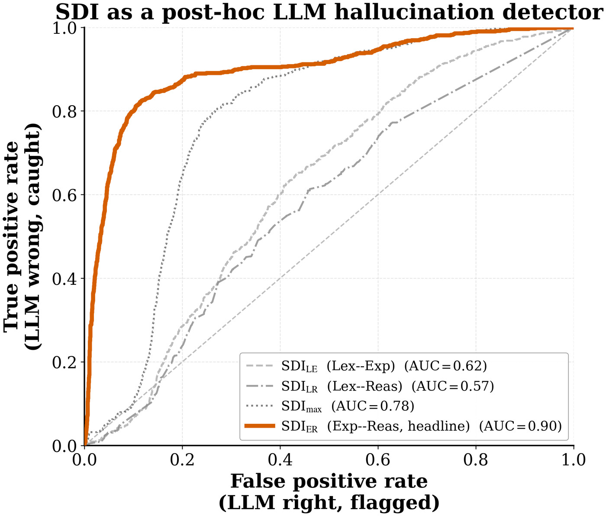

TriAgent → Hallucination detection
Detecting LLM hallucinations for free
If you already run a cheaper specialist alongside your LLM, the gap between their scores tells you when the LLM is wrong — at AUC 0.898, with no extra model call, no labels, and no training.
The measurement
Stratify Financial PhraseBank by whether the LLM got the answer right, then look at SDI_ER — the absolute difference between the sentence-level encoder's score and the LLM's:
| Condition | Mean SDI_ER |
|---|---|
| LLM is correct | 0.168 |
| LLM is wrong | 0.709 |
| Separation | 4.2× |
Thresholded as a binary "the LLM is hallucinating" flag, that reaches ROC AUC = 0.898, with Welch t = 46.8 and p ≈ 6 × 10⁻²⁵⁵.

SDI_ER) is a strong detector. The pairings that involve the word-level lexicon hug the diagonal.Why it costs nothing
In a tier-routed pipeline the encoder's score is already computed — it is what decides whether the query needs to escalate in the first place. Reading it a second time as a trust signal adds one subtraction.
| Method | Marginal cost per query | Requires |
|---|---|---|
| Cross-model divergence | zero — reuses an existing output | a second heterogeneous model in the pipeline |
| SelfCheckGPT | n extra LLM samples | nothing beyond the LLM itself |
| Self-consistency | n extra LLM samples | nothing beyond the LLM itself |
The honest trade-off: if you run exactly one model, SelfCheckGPT applies and this does not. There is nothing to diverge from.
Only cross-granularity disagreement works
This is the result that identifies the mechanism. Evaluated as detectors on the same data:
| Variant | Pairing | Mean (right) | Mean (wrong) | Welch t | AUC |
|---|---|---|---|---|---|
SDI_LE | lexicon vs. encoder | 0.394 | 0.499 | 8.66 | 0.620 |
SDI_LR | lexicon vs. reasoner | 0.324 | 0.386 | 5.27 | 0.575 |
SDI_ER | encoder vs. reasoner | 0.168 | 0.709 | 46.82 | 0.898 |
SDI_max | max of the three | 0.443 | 0.797 | 32.21 | 0.782 |
The lexicon-based pairings barely beat chance. What makes SDI_ER work is that the encoder and the reasoner read genuinely different amounts of context, so their errors are structurally different rather than correlated.
Where it does not work
The signal is a hallucination detector, not an adversarial detector, and the paper reports the negative result rather than omitting it:
| Attack type | Detection AUC | Verdict |
|---|---|---|
| Negation insertion | 0.71 | moderate |
| Synonym swap | ≈ 0.50 | chance |
| Numeric flip | ≈ 0.50 | chance |
| Character drop / typo | ≈ 0.50 | chance |
It catches negation attacks and essentially nothing else. Do not deploy it as an adversarial defence — that needs purpose-built detectors, and the paper says so explicitly.
Wiring it up
If you are already running a specialist and an LLM in parallel, the whole implementation is:
s_specialist = encoder.score(query) # already computed for routing
s_llm = reasoner.score(query) # already computed for the answer
trust = 1.0 - abs(s_specialist - s_llm) / 2.0
if trust < threshold:
flag_for_review(query) # or fall back to the specialistThreshold selection follows the same grid-search recipe as the routing thresholds: sweep on a held-out validation split and pick the point matching your tolerance for false flags.